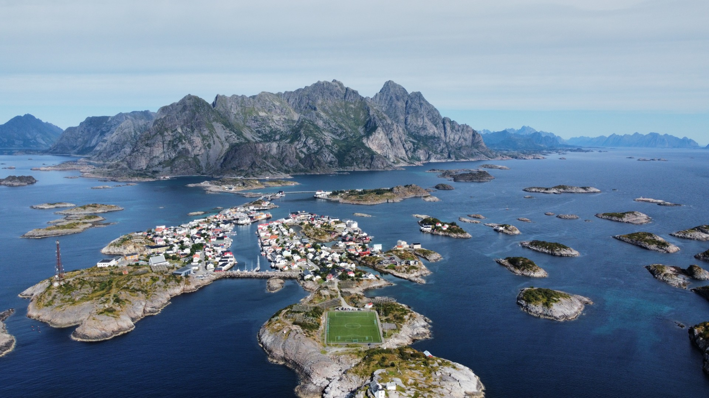

Between Sea and Stone
HENNINGSVÆR · LOFOTEN ISLANDS · NORWAY
Mucho más allá del Círculo Polar Ártico, donde las montañas se elevan directamente desde el mar y la oscuridad del invierno puede prolongarse durante semanas, se encuentra una de las comunidades más singulares de Noruega. Henningsvær es un lugar que no se revela de inmediato. Desde la carretera parece un pequeño pueblo pesquero repartido entre varios islotes rocosos. Pero visto desde el aire, cuenta una historia mucho más profunda.
Situado en el corazón del archipiélago de Lofoten, Henningsvær ha vivido durante siglos en el punto de encuentro entre el mar, el clima y la capacidad del ser humano para adaptarse. Aquí, la vida siempre ha dependido del océano. Las aguas del mar de Noruega han proporcionado alimento, comercio y oportunidades durante generaciones, convirtiendo lo que podría haber sido un remoto asentamiento ártico en una de las comunidades pesqueras más importantes del norte del país.
{kind=link}

El pueblo bajo las montañas
La historia de Henningsvær no puede entenderse sin el mar.
Durante siglos, pescadores de distintas regiones viajaban cada invierno hasta Lofoten para participar en la gran temporada de pesca del bacalao. En esta época del año, enormes bancos de bacalao ártico emigran desde el mar de Barents hasta las aguas que rodean las islas, convirtiéndolas en uno de los caladeros más ricos de Europa.
Esta migración estacional fue la base económica del norte de Noruega. El pescado capturado aquí se secaba, se almacenaba y se exportaba a numerosos países europeos, llevando prosperidad a comunidades que vivían en algunas de las condiciones más duras del continente.
Hoy en día, esa historia sigue muy presente en Henningsvær. Las tradicionales cabañas de pescadores conviven con viviendas modernas, los barcos llenan el puerto y las grandes estructuras de madera para secar bacalao continúan formando parte del paisaje durante buena parte del año.
A pesar del crecimiento del turismo, Henningsvær sigue siendo un auténtico pueblo pesquero que mantiene viva una tradición marítima que se remonta a varias generaciones.
El estadio al borde del océano
Entre todos los lugares emblemáticos de Henningsvær, ninguno ha despertado tanta atención internacional como su extraordinario campo de fútbol.
Conocido simplemente como Henningsvær Stadion, este campo fue construido originalmente para uso de los habitantes del pueblo. A diferencia de los grandes estadios de las ciudades, nunca fue pensado para atraer visitantes de todo el mundo. Su único objetivo era ofrecer un lugar donde jugar al fútbol en uno de los rincones más remotos del planeta.
Situado sobre un pequeño islote rocoso unido al pueblo por una estrecha carretera, el estadio está prácticamente rodeado por el mar. Sin grandes gradas, sin edificios comerciales y sin entorno urbano, transmite la sensación de encontrarse completamente aislado del mundo moderno.
Durante muchos años pasó prácticamente desapercibido fuera de Noruega. Todo cambió con la llegada de la fotografía aérea y los drones.
Visto desde el cielo, el intenso verde del campo de fútbol contrasta de forma espectacular con las rocas oscuras, los pequeños islotes y el azul profundo del océano. Lo que un día fue un sencillo campo para la comunidad local se ha convertido en uno de los escenarios deportivos más fotografiados del mundo.
"Desde el aire, el estadio deja de parecer un simple campo de fútbol y se convierte en un símbolo de cómo el ser humano ha aprendido a convivir con uno de los paisajes más impresionantes del planeta."
Una historia que solo puede apreciarse desde el aire
Esta fotografía fue capturada con un dron DJI Mini 2 sobre Henningsvær durante un día de calma en el Ártico.
Desde el suelo resulta imposible comprender por completo la estructura del pueblo. Las carreteras desaparecen entre los edificios, los puentes se confunden con el paisaje y la relación entre la tierra y el mar queda fragmentada.
Sin embargo, a medida que el dron gana altura, aparece una perspectiva completamente diferente.
Las islas empiezan a separarse visualmente. Los puentes muestran cómo toda la comunidad permanece conectada. El estadio aparece aislado, pero perfectamente integrado en su entorno. Las montañas se convierten en el espectacular telón de fondo de un paisaje moldeado tanto por la naturaleza como por el ingenio humano.
Momentos como este son los que hacen tan especial la fotografía aérea. Un lugar que parecía conocido se transforma de repente en algo completamente nuevo.

Entre el mar y la piedra
El título de esta historia nace precisamente de aquello que hace único a Henningsvær.
Aquí todo existe entre fuerzas opuestas.
Mar y montaña.
Aislamiento y conexión.
Naturaleza y civilización.
Durante siglos, las personas han aprendido a vivir en este estrecho equilibrio, construyendo hogares, puertos y comunidades sobre pequeños fragmentos de tierra rodeados por un entorno tan poderoso como impredecible.
Y, a pesar de todas las dificultades, Henningsvær ha perdurado. Sigue siendo uno de los lugares más emblemáticos del norte de Noruega, no porque haya vencido a la naturaleza, sino porque ha aprendido a convivir con ella.
Vista desde el aire, la localidad cuenta una historia que va mucho más allá de un campo de fútbol o de un conjunto de islas. Es un recordatorio de la extraordinaria capacidad del ser humano para adaptarse, construir y encontrar su lugar incluso en aquellos rincones donde, hace no tanto tiempo, sobrevivir ya era todo un desafío.
Historias relacionadas
Descubre otra cara del norte de Noruega en Into the Wild un viaje fotográfico por Ersfjord y los paisajes salvajes de Kvaløya.
Información de la fotografía
Ubicación: Henningsvær, Islas Lofoten, Noruega
Lugar: Estadio de Henningsvær
Dron: DJI Mini 2
Categoría: Fotografía aérea
Fotógrafo: Carles Torres